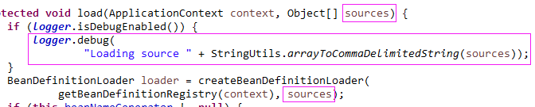

原文连接:https://www.cnblogs.com/lixinjie/p/taste-spring-008.html
上一篇文章强调了bean定义注册占Spring应用的半壁江山。而且详细介绍了两个重量级的注册bean定义的类。
今天就以SpringBoot为例，来看看整个SpringBoot应用的bean定义是如何注册进容器的。
先来看看经典的启动入口，如下图01：
可以看到调用的是run方法，并把主类（main或primary）作为第一个参数出入。
接下来要做的事情，就是顺藤摸瓜，看看到底发生了什么，并确定下究竟哪些类被注册了bean定义。
此时，我就是一个快乐的小侦探，OK，走起。
上面的调用走到了这里，如下图02：
可以看到把第一个参数（即主类）放入数组里，又调用了一个run方法，如下图03：
使用第一个参数（即主类）去调用了构造函数，得到了实例对象，然后又调用了实例的run方法。
顺着构造函数走下去，最终走到了这里，如图04：
发现最终主类被，放到Set<Class<?>>类型的primarySources字段中。
编程新说注：通过搜索全类，发现这个字段除了刚刚放入的主类外，再没有放入其它类。
接着再沿着run方法往下走，来到了这里，如下图05：
首先定义了一个容器类的变量，然后创建容器类的实例，就是通过反射调用构造函数了。
然后就是准备容器，进入方法里看看，如下图06：
在方法最后终于看到了我们期望的，即bean定义的注册。
发现要注册的资源是getAllSources()这个方法返回的，那就进去看看吧，如下图07：
看到资源来自于primarySources字段和sources字段。第一个字段上文已经讲了，只包含主类。
编程新说注：通过搜索全类，发现第二个字段sources是null，因此它不包含资源。
因此，真正获取到的用于注册bean定义的资源只有主类自己。
那就打破砂锅走到底，继续吧。
再来看看load方法，如下图08：
使用刚刚获取到的资源创建了BeanDefinitionLoader类的实例。
这个类是SpringBoot定义的，类似于一个门面，因为它包含了所有注册bean定义的方式。
这个类就是最后一步了，因此来看看，如下图09：
首先是一个Object[]类型（之所以用Object，是因为资源类型有多种）的sources字段，用于存储刚刚获取的资源。
剩下四个都是用来注册bean定义的，其中两个上一篇已经讲过。剩余两个是处理xml和groovy的，一个已经过时，一个尚未流行。
最后再来看一眼，生成实例时调用的构造函数，如下图10：
就是对五个字段的赋值或实例化，并无特别之处。（其实是有的，先卖个关子）
接下来就是根据资源的具体类型，使用四个bean定义注册类中的一个来注册bean定义。
这一通分析下来，推导出来的结论是：
截止到目前，只有主类自己被注册了bean定义。
为了证明这一点，把日志级别改为DEBUG，如下图11：

可以看出在源码中，把资源数组进行了debug输出。
最终输出内容，如下图12：
发现确实只注册了主类自己，没有其它。和我们分析的一样，哈哈。
到现在prepareContext已经执行完毕了，接下来该执行的就是refreshContext了。
熟悉Spring容器的都知道，refresh其实就是容器的启动了。
因此最后得出一个结论，对于“常规”的SpringBoot应用：
在Spring容器启动前，只有应用的主类自己被注册了bean定义。
What，are you kidding me？
Of course not。
那其它的那些bean定义是何时及如何注册的呢？
且听下回分解。
最后来看看主类的bean定义信息，作为一个小小的彩蛋吧。
如下图13：
可以看出bean名称符合生成规则，bean定义使用了CGLIB生成了代理。
bean的一些属性，单例、非抽象、非延迟加载、未明确定义自动装配方式、作为自动装配候选bean，非主要的等等。
bean定义的实现类是AnnotatedGenericBeanDefinition，可知是通过编程方式（而非jar包扫描）注册的bean定义。
预祝，看过本文的人都有所收获。若能转发一下，则求之不得。
>>> 品Spring系列文章 <<<
品Spring：SpringBoot和Spring到底有没有本质的不同？
作者是工作超过10年的码农，现在任架构师。喜欢研究技术，崇尚简单快乐。追求以通俗易懂的语言解说技术，希望所有的读者都能看懂并记住。下面是公众号和知识星球的二维码，欢迎关注！